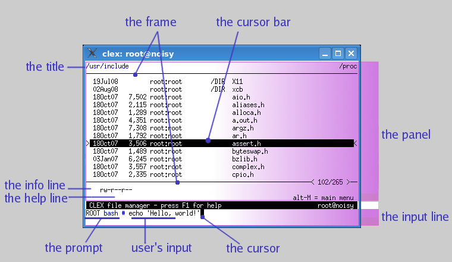

The screen is divided into two areas: the panel, where various kinds of data are displayed, and the input line, where a user can enter and edit his or her input.

There are several types of panels with a corresponding input line, e.g. the file panel with the command line or the configuration panel.
One of the entries in the panel is highlighted with the cursor bar. It is called the current entry.
If a text is too long to fit on the screen, it is indicated
by a highlighted character > on the right.
Near the right margin in the lower panel frame there is the line number of the current entry, and the total number of entries in the panel.
The input line occupies only a few lines on the screen, but can contain many lines of text.